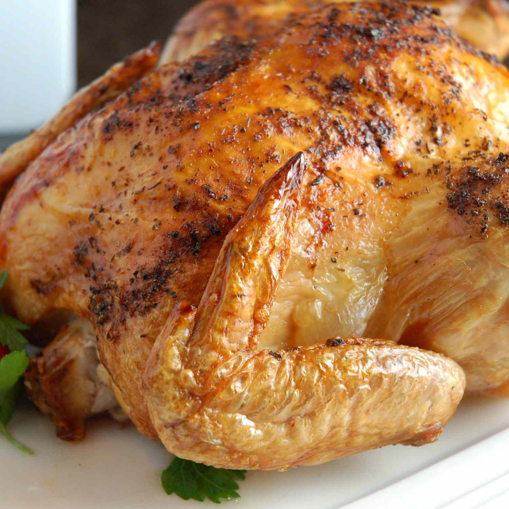

Spicy Rapid Roast Chicken

Description
This is the kind of recipe that you just throw together. No need to truss or fuss.
Pop it into a very hot oven and it is ready in a hurry
- Prep Time:
- Cook Time:
- Additional Time:
- Total Time:
- Servings:
Ingredients
- 1 (3 pound) whole chicken
- ¼ teaspoon salt
- ¼ tea1 tablespoon olive oilspoon ground black pepper
- ¼ teaspoon dried oregano
- ¼ teaspoon dried basil
- ¼ teaspoon paprika
- ⅛ teaspoon cayenne pepper
Directions
- Preheat oven to 450 degrees F (230 degrees C).
- Rinse chicken thoroughly inside and out under cold running
water and remove all fat. Pat dry with paper towels.
- Put chicken into a small baking pan. Rub with olive oil.
Mix the salt, pepper, oregano, basil, paprika and cayenne pepper together and sprinkle
over chicken.
- Roast the chicken in the preheated oven for 20 minutes. Lower
the oven to 400 degrees F (205 degrees C) and continue roasting to a minimum internal
temperature of 165 degrees F (74 degrees C), about 40 minutes more. Let cool 10 to 15
minutes and serve.
Home